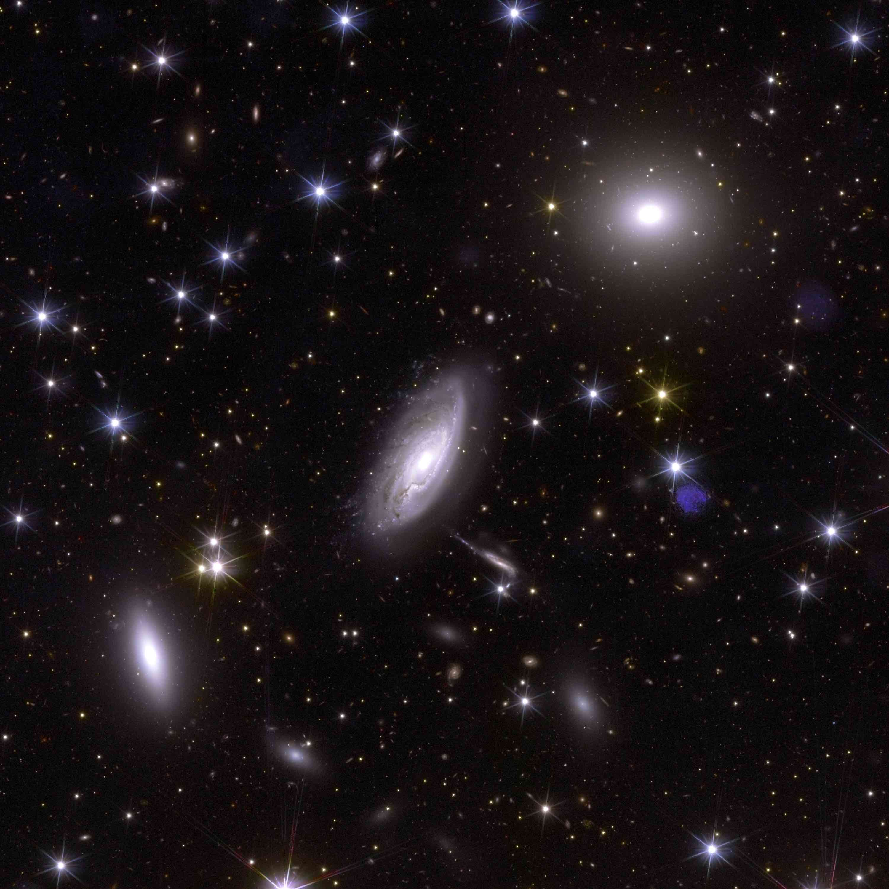

Executive Summary
Five researchers from the National Astronomical Observatories of the Chinese Academy of Sciences and the National Astronomical Data Center posted a paper to arXiv on September 26, 2026. They took 365,513 galaxy images captured by the European Space Agency's Euclid space telescope, converted every one of them to the same pixel size, and computed a feature vector of 384 numbers per image to release alongside the pictures. The title of the paper carries the phrase 'AI-Ready', meaning a state in which AI can use the data as it stands. This article looks at what that phrase actually fixes in advance.
The figure that draws the eye is 1,681. That is how many anomaly candidates came out when anomaly detection was run over the prepared data. Yet in the place where the paper lays those candidates out as pictures, there is almost nothing unknown. Most of them are blank frames with nothing captured, cutouts sliced off at an edge, cross-shaped glare from a bright star, and galaxies photographed on top of one another. The authors put a line under it themselves, writing that the workflow proves its worth for quality control here, not for establishing that any astrophysical anomaly exists.
Sections 1 through 4 report what is in the paper. Section 5 reads the same facts through the lens of data quality, and that reading belongs to this article.
Key Figures
Source: Xie, Xu, Zhang, Chen, Cui, "Making Euclid VIS Imaging AI-Ready" (arXiv:2609.32753, September 26, 2026).
365,513
Galaxy images put into one format
The first production run took about 48 hours, an operational estimate the authors logged
384 dimensions
Feature values precomputed per image
Classification, search and anomaly detection all read the same numbers again
1,681
Anomaly candidates selected
The sample the paper displays is mostly imaging defects such as blank frames and star glare
0.484
Spiral-arm classification score
Lower than 0.492, the score for always guessing the majority class
Two Days, 365,513 Images, One Format
Euclid is a space telescope the European Space Agency launched in 2023. It sweeps broadly across the sky photographing galaxies in order to measure the expansion of the universe and the distribution of dark matter, and what its visible-light camera has already recorded runs far past what one person could look through. The material in this paper is Euclid's first public release, Quick Data Release 1, together with the Galaxy Zoo Euclid morphology catalogue built from the classifications of volunteers. That catalogue lists 380,111 unique objects.

The morphology values in the catalogue were not written in by hand, galaxy by galaxy. They are probabilities produced by Zoobot, a model trained on the responses volunteers left behind, and what this paper used as ground truth is the subset of those probabilities that a confidence threshold kept.
Of that catalogue the team released 365,513 rows. Removing the 9 rows with duplicate object identifiers leaves 365,504 objects that line up with the catalogue. For each one they took the released 128×128 pixel cutout, converted it to 224×224, and attached the 384 numbers drawn from the same picture alongside it. The National Astronomical Data Center hosts the data for download, and the processing code is public under the MIT license.

The work was handled by a cutout service running inside the National Astronomical Data Center. It gathers requests into batches, hands them out to parallel workers, and stores results under a key made of the coordinates, the cutout size, the instrument, the file type and the band. When the same request arrives again, the stored copy is served instead of being recomputed. The more often a dataset is requested repeatedly, the more that structure pays for itself.
The first production run finished in roughly 48 hours. That works out to 2.12 images per second, about 7,615 per hour. Reading that rate as a precise measurement, though, would go further than the paper does. The authors wrote in the body text that the number is an author-attested operational estimate rather than a timestamp-complete benchmark. Among the figures quoted in this article, that one is different in kind from the rest.
What 'AI-Ready' Fixes in Advance
Exactly one place in the paper defines the phrase, and it is the caption of the first figure. AI-Ready there points to two things. One is standardized cutouts. The other is a reusable embedding that several analyses can share. The authors draw the line once more in the body text: "We use 'AI-ready' in this operational engineering sense, not as a claim that one representation is sufficient for every scientific inference."
The first thing fixed in advance is the pixel format. Each source cutout is read as 32-bit floating point, pixels with no value are dropped, the top and bottom one percent of the brightness distribution is clipped, and the rest is squeezed flat between 0 and 1. Then 128 pixels are stretched to 224 and the single grayscale frame is duplicated into three channels. The brightness ranges and sizes that differed from picture to picture converge at this step.
The second is the feature space. The team took the small version of DINOv2, Meta's general-purpose vision model (ViT-S/14), and ran it with its weights frozen. They did not retrain it on astronomical images. The 384 numbers a model trained on 142 million web pictures produces when it looks at a galaxy became, as they stand, the shared coordinates for this dataset. Every analysis that follows reads only those numbers, never opening the picture again.
So what changes once that is settled? The work of picking a crop size, matching brightness and extracting features, repeated by each researcher over the same source data, goes away. Classification, search and anomaly detection all happen on top of the 384 numbers drawn once. This is also where the paper draws its own contribution narrowly. It states that the authors do not claim priority on morphology classification, similarity search or anomaly detection, and that their contribution is an independently released engineering and data path.
What those 384 numbers hold was checked by regression, asking how much of the existing catalogue's measurements could be recovered from the embedding alone. The answer split by item. Ellipticity, which describes how squashed a galaxy is, came back relatively well with a coefficient of determination of 0.596, and surface brightness reached 0.511. The Kron radius, which stands in for the size of the galaxy, was the lowest of the four targets at 0.377. The remaining target, surface brightness minus total magnitude, was 0.390. Catalogue information does survive inside the feature values to some degree and in roughly linear form, but not every physical quantity survives evenly.
The reason for that narrow self-placement becomes clear from the neighbours. On the same Euclid data there is already AstroPT, a multimodal foundation model using optical, infrared and spectroscopic inputs together at a scale of about 300,000 images. The detailed morphology catalogue this paper borrowed as labels is itself a separate study that ran Zoobot. On a different survey, AION-1 froze the large version of DINOv2 and reached 71.4 percent accuracy on Galaxy Zoo 10 morphology classification. The paper did not place that number next to its own score. Different survey, different task, not comparable, as it wrote.
Inside the 1,681 Anomaly Candidates
Picking anomaly candidates took two steps. First, a local outlier factor looking at the 100 nearest neighbours in the raw 384-dimensional space scored every object, and the unusual ones were pulled out. Second, on a map where the same data had been squeezed flat into two dimensions, the top 2 percent by distance from the centre were pulled out. The objects that made both lists number 1,681. That is 0.46 percent of the 365,513 images released.
What those candidates are comes out in the place where the paper displays eighteen of them. The first kind is a blank frame with nothing in it, or a fragment sliced off at an edge, caught on the boundary of the observed field or damaged somewhere in data assembly. The second is the diffraction pattern and saturated pixels a bright foreground star produces. The third is a picture holding two galaxies laid over each other, and the fourth is a picture faint enough that noise dominates the frame.
The authors' own sentence is at its clearest here. These examples, they wrote, demonstrate immediate value for data-quality control rather than confirming astrophysical anomalies. What anomaly detection pulled up first was not the universe but the flaws left behind by imaging and data processing.
A caveat comes attached to the character of the list as well. Those 1,681 objects are a configuration-dependent list, shifting with the neighbourhood size, the contamination rate, the scale of the raw coordinates, the settings of the two-dimensional projection and the global distance statistics. Change the settings and the roster changes. The paper also states that it does not estimate a reproducible anomaly prevalence. This number is not a count of how many strange objects are out there in the sky.
The same posture shows up in the fourth application, similar-galaxy search. Cosine similarity narrows the field to 300 candidates, then weights set by hand over labels, physical quantities and image quality return the top four. The authors call this a qualitative demonstration and add that the combined score should not be read as a calibrated probability. They also note that a check covering four results per query across four tasks is too small a scale to justify choosing weights that would be good in general.
Standardization Stops at the Spiral Arms
Whether the prepared feature values are actually usable shows up when you classify while rationing the labels. The team put a simple classifier on top using only 1 percent of the labels and set it four morphology problems: separating smooth galaxies from ones with visible structure, picking out galaxies lying edge-on, telling round shapes from elongated ones, and judging whether spiral arms are present.

The first three problems scored between 0.80 and 0.86 on 1 percent of the labels, which means usable judgments after seeing one in every hundred available answers. The fourth problem did not follow. The spiral-arm score was 0.484, below the 0.492 you get by looking at nothing and always guessing the majority class.
If rationing the labels were the problem, adding labels should solve it. Yet with 100 percent of the answers supplied, the spiral-arm judgment sat at 0.496. Under the same conditions the other three problems climb to between 0.90 and 0.95. The paper concluded that this experiment does not establish useful discrimination under its present highly imbalanced high-confidence label contract. Too few galaxies are marked as having spiral arms with any confidence, which turns it into a problem tilted heavily to one side.
The source of the tilt lies in how the answers were made. The values this experiment used as ground truth are the ones left after keeping only the confident end of Zoobot's probabilities, and spiral arms are a uniquely rare item among those that cleared the threshold. Supplying 100 percent of the answers never meant bringing in the ambiguous galaxies left outside that threshold. So what this table says is not that machines cannot see spiral arms. It says that the shape of the answers available today does not support the question.
It is hard to read this passage as denting the paper's credibility. The opposite, rather. Using the same data, the same feature values and the same classifier, the authors showed with numbers that one problem yields to 1 percent of the answers while another resists all of them. The range standardization guarantees and the range it does not sit side by side inside one table.
Why Pebblous Is Watching This Research
From here we read the same numbers from the side of our own workplace.
'AI-Ready' is a phrase the industry uses constantly while defining it differently from person to person. This paper nailed it down very narrowly on astronomical data. One pixel format, one feature space. In exchange for fixing those two, it promised no list of problems that would come out solved. Reading it as a contract about materials rather than a promise about capability makes it land faster. Matching the specification so the same material never has to be cut twice, and what dish that material turns into, are separate questions.
When that distinction blurs inside an organization, nobody can see where the cost is coming from. The expectation that a model will run well because the data has been tidied, and the fact that tidying it means the same work need not be redone, are not the same size. The second is usually recovered for certain; the first splits by problem. This paper exposed that split through the scores on four problems. Three yielded to 1 percent of the answers, and one refused even when all of them were supplied.
The passage where 1,681 anomaly candidates turned out to be a defect list does not read as a failure story either. Gather data in one place for the first time and measure it against a single ruler, and what jumps out first is usually missing values, truncation and noise. This is the scene Pebblous meets over and over in data quality work. Asked to find the outliers, the first list we hand back is often not a new discovery but a flaw in collection. Until that list is cleared, there is no moving on to the next question. That the paper turned its anomaly detection result honestly toward quality control follows naturally.
One more thing worth adding is the authors' posture. They stated that the speed is only an operational estimate they recorded themselves, wrote that the anomaly candidate list shifts with the configuration, called the search results a qualitative demonstration, and left the unsolved spiral-arm problem in the conclusion. When a study releasing data draws the boundary of what it guarantees this finely, whoever picks that data up can begin knowing what else needs checking. The most expensive loss in data quality is not a wrong value. It is a value with nothing written down about how far it can be trusted.
Thank you for reading this far. The paper itself and the released data are available on arXiv and at the National Astronomical Data Center. Next time your organization says it has prepared data so AI can use it as it stands, we would be glad if you wrote out the list of what was actually fixed, and told us what turned out to be missing from it.
References
R.1Academic Papers
- 1.Xie, J., Xu, Y., Zhang, Z., Chen, L., & Cui, C. (2026). "Making Euclid VIS Imaging AI-Ready: A Scalable Pipeline for Morphology, Anomaly Detection, and Similarity Search." arXiv:2609.32753. Unless noted otherwise, every figure and quotation in this article comes from here: the processing specification, the regression results, the classification scores at 1 percent of labels, the anomaly selection method and its stated limits, and the account of the similarity search.
- 2.Oquab, M., et al. (2023). "DINOv2: Learning Robust Visual Features without Supervision." arXiv:2304.07193. The general-purpose vision model the paper above used as it stands, with its weights frozen.
- 3.Euclid Collaboration: Walmsley, M., et al. (2025). Galaxy Zoo Euclid detailed morphology catalogue (Q1, about 378,000 objects). Built from volunteer responses, this catalogue is the origin of the high-confidence labels the paper above used. This article refers to it through that paper's account.
- 4.Parker, L., et al. (2025). AION-1. Earlier work placing a DINOv2-family encoder on data from a different survey, reporting 71.4 percent accuracy on Galaxy Zoo 10 morphology classification. The paper above states that a different survey and a different task make it unsuitable for direct comparison, and this article refers to it through that account.
- 5.Euclid Collaboration: Siudek, M., et al. (2025). AstroPT. A foundation model trained on the same Euclid release across three modalities at once, combining optical imaging, infrared imaging and spectra, at a scale of roughly 300,000 images. It is the prior work the paper above set beside itself when placing its own contribution narrowly, and this article refers to it through that account.
R.2Released Data & Code
- 6.National Astronomical Data Center (NADC). (2026). Euclid VIS cutout and embedding data release. Where the 365,513 cutouts of 224×224 pixels and the 384-dimensional feature values can be downloaded.
- 7.Xie, J. (2026). "Making-Euclid-VIS-Imaging-AI-Ready," v1.1.0, MIT License. Zenodo DOI 10.5281/zenodo.21629100. Holds the processing code and the reproduction steps.